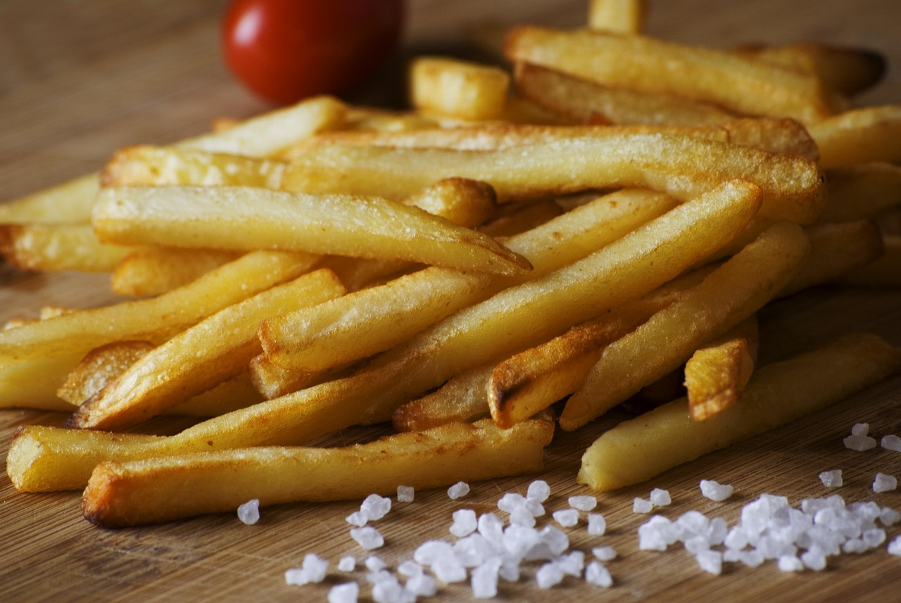

Home
Airfryer Pommes Rezept

Die einfachsten selbstgemachte Pommes für den Airfryer. Super lecker und super crunchy!
Zutaten
Für 2 Portionen
- 500g Kartoffeln (vorwiegend Festkochend)
- Salz
- Pfeffer
- 1 EL Öl
How to cook:
- Die KArtoffeln washen und schälen und in die gewünschte Form schneiden
- Für 30 min in kaltes Wasser legen
- Die "Pommes" aus dem Wasser nehmen und gut abtrocknen mit einem Küchentuch, anschließend in eine Schüssel geben und mit Salz und Pfeffer und etwas Öl vermengen
- Bei 200 Grad für 20 min in den Airfryer geben. Dabei darauf achten das die Pommes genügend Platz haben. Zwischendruch wenden. Guten Appetit